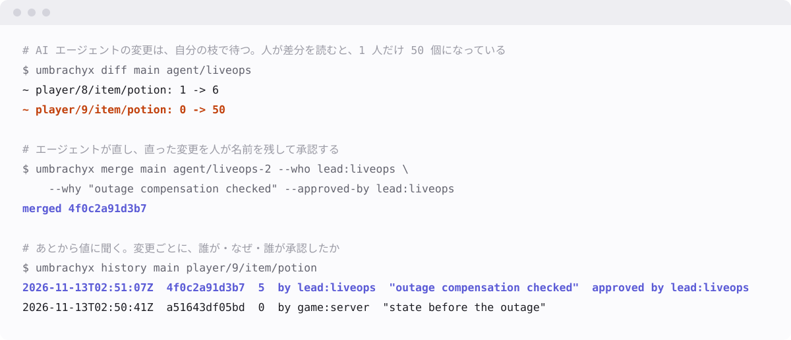

すべての変更が、誰が・なぜ・誰が承認したかと一緒に残ります。
書き込みが続く間も、読み取りは数十マイクロ秒で返ります。

データベースは「いまの値」だけを持ち、書き込みはその場で本番になる。 過去を持つと遅くなるので、ログとバックアップに任せてきた → そこへ AI エージェントも書くようになった。速くて、数が多くて、ときどき間違える → 気づいたときには、元の値も理由も残っていない。
ここでは、履歴はデータの横に置くログではなく、データの持ち方そのものです。メモリの上にあるので、値に「どこから来たか」を聞く費用は、値を読む費用とほぼ同じです。 また、権限を設定で狭める方法は、設定を 1 つ誤れば抜けます。そこで、エージェントは本番に書く口をそもそも持ちません。 エージェントに渡すトークンには枝の名前が入っていて、その枝のほかには書けず、承認もできません。 乗っ取られたエージェントに何ができないかは、試験つきの一覧にしてあります。
Umbrachyx は、すべての変更を履歴として持つインメモリのデータベースです。 値の 1 つ 1 つが、いつ・何から何へ・誰が・なぜ・誰が承認したかを持ちます。その履歴は、git がファイルを扱うように、枝を分け、差分を見て、統合し、取り消せます。Redis のプロトコルで話すので、いまあるクライアントがそのまま使えます。エージェントは MCP でつながります。
手順つきの見本が 4 つあります（英語）：ゲームの所持品、サポート窓口、設定の段階的な反映、ゲームのデータへの 5 つの問い。どれも、書いてあるコマンドを試験がそのまま実行しています。
AWS の同じ機械（EC2 m6id.xlarge・東京・ローカル NVMe）で、Valkey
と並べて測りました。どちらも、書き込みをディスクに同期してから確定を返す設定です（Valkey
は appendfsync always）。値は 32 バイト、キーは 100
万個、データは合成です。
| 1 秒あたり | Umbrachyx | Valkey | |
|---|---|---|---|
| 50 クライアントが書き続けている間の読み取り | 23,941 | 1,878 | 約 12.7 倍 |
| 読み取り・1 クライアント | 54,466 | 35,186 | 約 1.5 倍 |
| 同期つきの書き込み・1 クライアント | 8,813 | 6,737 | 約 1.3 倍 |
| 読み取り・50 クライアント | 156,740 | 161,290 | ほぼ同じ |
| 同期つきの書き込み・64 クライアント | 35,689 | 95,329 | 約 2.7 分の 1 |
| 同期つきの書き込み・256 クライアント | 38,292 | 117,855 | 約 3.1 分の 1 |
| 同期つきの書き込み・50 クライアントが 64 個ずつ送る | 72,908 | 611,434 | 約 8 分の 1 |
| 上書き 1 回あたりのメモリ | 約 620 バイト | 約 16 バイト | 約 37 倍使う |
速さの行は 2026-11-13 の測定で、1 回ずつです。メモリの行は 2026-11-12 の 3 回の測定からです。速い Valkey ではありません。多くのクライアントが同時に書く使い方と、メモリの量では、はっきり負けています。履歴を全部持つための費用です。生の出力・機械・手順は bench/results に、PostgreSQL・Dolt との比較を含む全部の表は README にあります。
人が、枝・キーの範囲・目的・期限を決めたトークンを、エージェントに渡す。
エージェントは自分の枝に、理由を付けて書く。本番は変わらない。
人が「待っている変更」の一覧から 1 つ選び、差分を読む。
承認すれば本番に入り、承認した人の名前が残る。却下も、理由つきで残る。
始まりは、すべての値の履歴と、メモリの速さです。 向かう先は、AI のエージェントが「ここで働きたい」と選ぶデータベースです。 エージェントは会話をまたいだ記憶を持たず、少し前に読んだ値から計算して書き、時間切れで送り直し、読んだぶんだけ文脈を使います。だから、ものさしは 1 秒あたりの件数よりも、「読んで、試して、確かめる 1 往復が安いか」と、間違いが安いかです。
サーバーだけを Docker で立てます。ログはボリュームに置かれます。配布のイメージは、最初の版と一緒に出します。それまでは、取ってきたソースから組み立てます。
$ git clone https://github.com/meta-taro/umbrachyx && cd umbrachyx
$ docker build -t umbrachyx .
$ docker run -d --name umbrachyx -p 127.0.0.1:6380:6380 -v umbrachyx-data:/data umbrachyx
$ valkey-cli -p 6380 set player/42/gems 100
OK
$ valkey-cli -p 6380 umbra.history app player/42/gems
# 値・確定の id・時刻・誰が・なぜ・誰が承認したか が JSON で返る
127.0.0.1 にだけ公開してください（上のとおり）。読み取りにはまだトークンが要らず、通信も暗号化されていません。